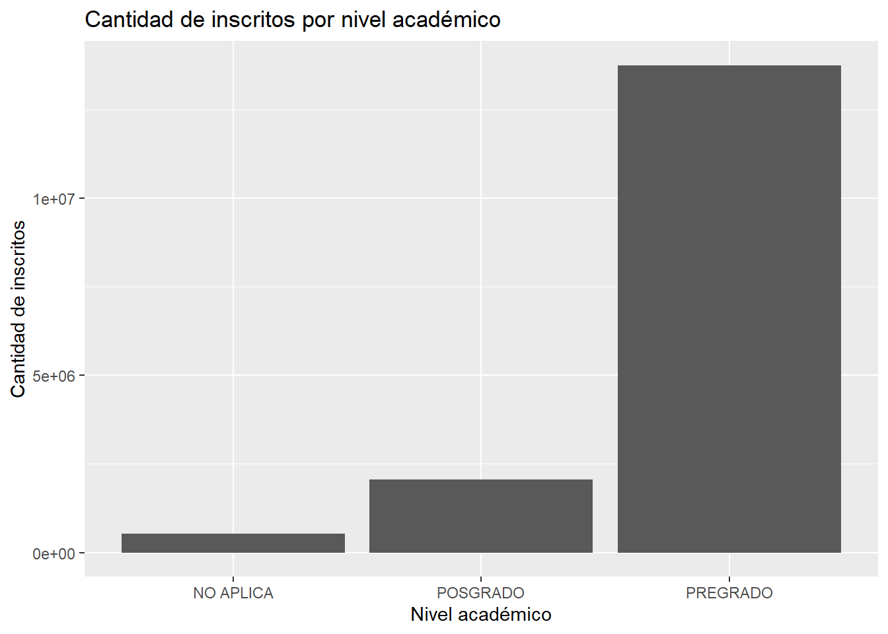
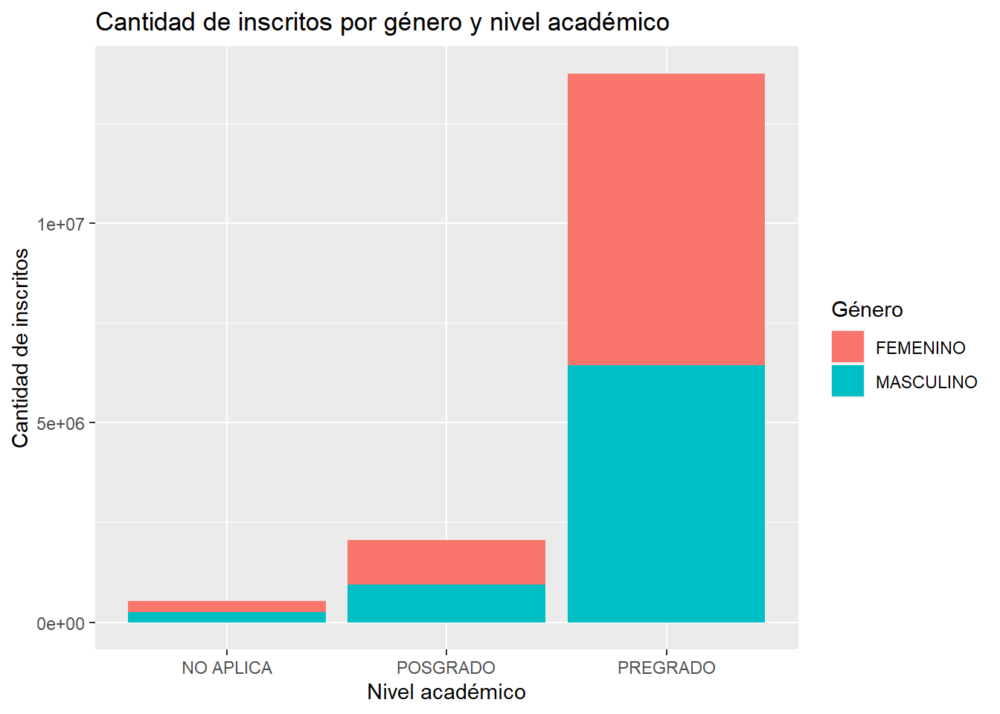
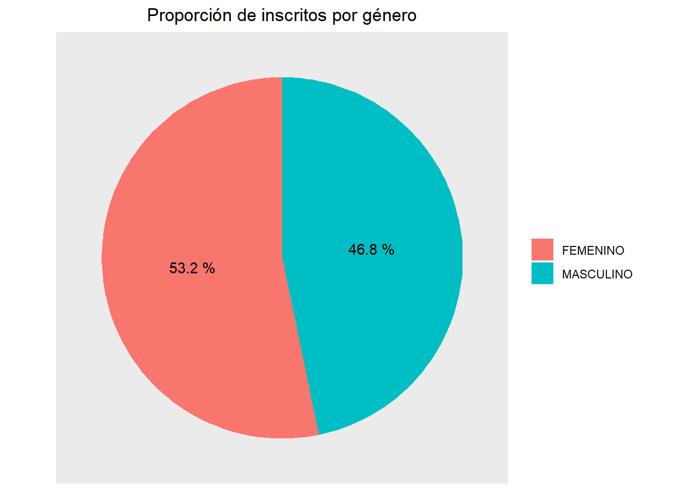
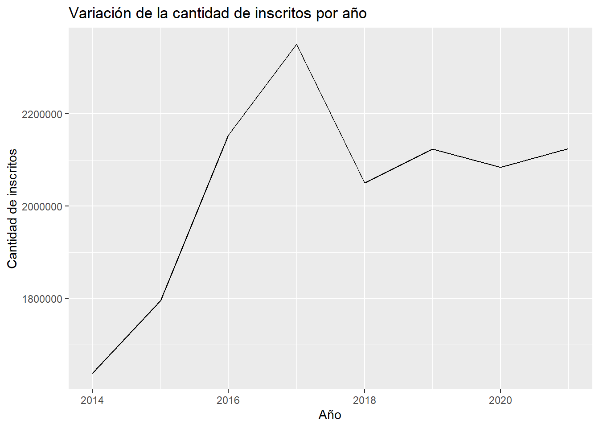
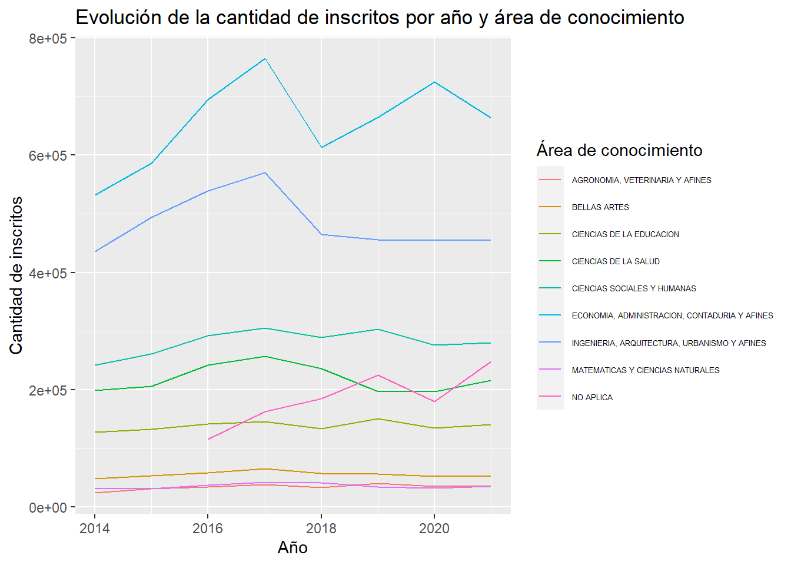
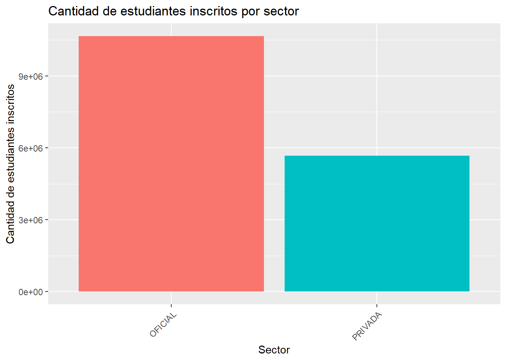
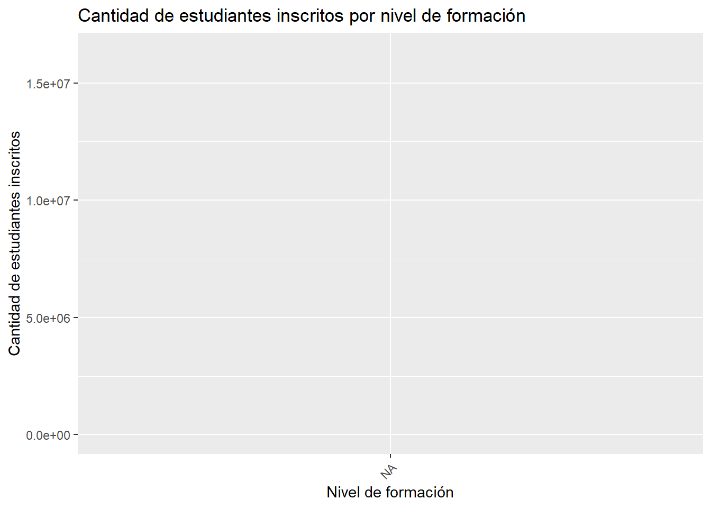

Code
library(ggplot2)
library(dplyr)
library(readr)Fuente: https://snies.mineducacion.gov.co/portal/ESTADISTICAS/Bases-consolidadas/
library(ggplot2)
library(dplyr)
library(readr)Se cargo el dataset preparado de los archivos descargados de la fuente, estudiantes_inscritos.csv.
estudiantes_incritos <- read.csv("estudiantes_inscritos.csv")glimpse(estudiantes_incritos)Rows: 368,608
Columns: 33
$ codigo_de_la_institucion <int> 1101, 1101, 1101, 1101, 1101, 11…
$ ies_padre <int> 1101, 1101, 1101, 1101, 1101, 11…
$ institucion_de_educacion_superior_ies <chr> "UNIVERSIDAD NACIONAL DE COLOMBI…
$ principal_o_seccional <chr> "PRINCIPAL", "PRINCIPAL", "PRINC…
$ id_sector <int> 1, 1, 1, 1, 1, 1, 1, 1, 1, 1, 1,…
$ sector_ies <chr> "OFICIAL", "OFICIAL", "OFICIAL",…
$ id_caracter <int> 4, 4, 4, 4, 4, 4, 4, 4, 4, 4, 4,…
$ caracter_ies <chr> "UNIVERSIDAD", "UNIVERSIDAD", "U…
$ codigo_del_departamento_ies <int> 11, 11, 11, 11, 11, 11, 11, 11, …
$ departamento_de_domicilio_de_la_ies <chr> "BOGOTA D.C.", "BOGOTA D.C.", "B…
$ codigo_del_municipio_ies <int> 11001, 11001, 11001, 11001, 1100…
$ municipio_de_domicilio_de_la_ies <chr> "BOGOTA D.C.", "BOGOTA D.C.", "B…
$ codigo_snies_del_programa <chr> "38", "38", "39", "39", "40", "4…
$ programa_academico <chr> "ESPECIALIDAD EN CIRUGIA GENERAL…
$ id_nivel <int> 2, 2, 2, 2, 2, 2, 2, 2, 2, 2, 2,…
$ nivel_academico <chr> "POSGRADO", "POSGRADO", "POSGRAD…
$ id_nivel_formacion <chr> "1", "1", "1", "1", "1", "1", "1…
$ nivel_de_formacion <chr> "ESPECIALIZACION", "ESPECIALIZAC…
$ id_metodologia <chr> "1", "1", "1", "1", "1", "1", "1…
$ metodologia <chr> "PRESENCIAL", "PRESENCIAL", "PRE…
$ id_area <chr> "4", "4", "4", "4", "4", "4", "4…
$ area_de_conocimiento <chr> "CIENCIAS DE LA SALUD", "CIENCIA…
$ id_nucleo <chr> "445", "445", "445", "445", "445…
$ nucleo_basico_del_conocimiento_nbc <chr> "MEDICINA", "MEDICINA", "MEDICIN…
$ codigo_del_departamento_programa <chr> "11", "11", "11", "11", "11", "1…
$ departamento_de_oferta_del_programa <chr> "BOGOTA D.C.", "BOGOTA D.C.", "B…
$ codigo_del_municipio_programa <chr> "11001", "11001", "11001", "1100…
$ municipio_de_oferta_del_programa <chr> "BOGOTA D.C.", "BOGOTA D.C.", "B…
$ id_genero <int> 2, 1, 2, 1, 2, 2, 1, 1, 2, 1, 2,…
$ genero <chr> "FEMENINO", "MASCULINO", "FEMENI…
$ ano <int> 2014, 2014, 2014, 2014, 2014, 20…
$ semestre <int> 1, 1, 1, 1, 1, 2, 1, 2, 1, 1, 1,…
$ cantidad_incritos <int> 48, 81, 48, 17, 46, 67, 79, 122,…# Normalizar los valores de la variable principal_seccional
estudiantes_incritos <- estudiantes_incritos %>% mutate(principal_o_seccional = toupper(principal_o_seccional))
# Normalizar los valores de la variable sector_ies
estudiantes_incritos <- estudiantes_incritos %>% mutate(sector_ies = toupper(sector_ies))
# Normalizar los valores de la variable caracter_ies
estudiantes_incritos <- estudiantes_incritos %>% mutate(caracter_ies = toupper(caracter_ies))
estudiantes_incritos <- estudiantes_incritos %>% mutate(caracter_ies = iconv(caracter_ies, to = "ASCII//TRANSLIT"))
# Normalizar los valores de la variable departamento_de_domicilio_de_la_ies
estudiantes_incritos <- estudiantes_incritos %>% mutate(departamento_de_domicilio_de_la_ies = toupper(departamento_de_domicilio_de_la_ies))
estudiantes_incritos <- estudiantes_incritos %>% mutate(departamento_de_domicilio_de_la_ies= iconv(departamento_de_domicilio_de_la_ies,to = "ASCII//TRANSLIT"))
estudiantes_incritos <- estudiantes_incritos %>%
mutate(departamento_de_domicilio_de_la_ies = case_when(
departamento_de_domicilio_de_la_ies == "GUAJIRA" ~ "LA GUAJIRA",
departamento_de_domicilio_de_la_ies == "NORTE DE SA" ~ "NORTE DE SANTANDER",
departamento_de_domicilio_de_la_ies == "VALLE DEL C" ~ "VALLE DEL CAUCA",
departamento_de_domicilio_de_la_ies == "ARCHIPIELAG" ~ "ARCHIPIELAGO DE SAN ANDRES, PROVIDENCIA Y SANTA CATALINA",
departamento_de_domicilio_de_la_ies == "SAN ANDRES Y PROVIDENCIA" ~ "ARCHIPIELAGO DE SAN ANDRES, PROVIDENCIA Y SANTA CATALINA",
departamento_de_domicilio_de_la_ies == "BOGOTA D.C." ~ "BOGOTA, D.C.",
departamento_de_domicilio_de_la_ies == "BOGOTA D.C" ~ "BOGOTA, D.C.",
departamento_de_domicilio_de_la_ies == "CUNDINAMARC" ~ "CUNDINAMARCA",
TRUE ~ departamento_de_domicilio_de_la_ies
))
# Normalizar los valores de la variable municipio_de_domicilio_de_la_ies
estudiantes_incritos <- estudiantes_incritos %>% mutate(municipio_de_domicilio_de_la_ies = toupper(municipio_de_domicilio_de_la_ies))
estudiantes_incritos <- estudiantes_incritos %>% mutate(municipio_de_domicilio_de_la_ies= iconv(municipio_de_domicilio_de_la_ies,to = "ASCII//TRANSLIT"))
estudiantes_incritos <- estudiantes_incritos %>%
mutate(municipio_de_domicilio_de_la_ies = case_when(
municipio_de_domicilio_de_la_ies == "SANTA FE DE" ~ "SANTA FE DE ANTIOQUIA",
municipio_de_domicilio_de_la_ies == "SANTAFE DE ANTIOQUIA" ~ "SANTA FE DE ANTIOQUIA",
municipio_de_domicilio_de_la_ies == "EL CARMEN DE" ~ "EL CARMEN DE VIBORAL",
municipio_de_domicilio_de_la_ies == "CARMEN DE VIBORAL" ~ "EL CARMEN DE VIBORAL",
municipio_de_domicilio_de_la_ies == "PUERTO BERRI" ~ "PUERTO BERRIO",
municipio_de_domicilio_de_la_ies == "BOGOTA D.C." ~ "BOGOTA, D.C.",
municipio_de_domicilio_de_la_ies == "BOGOTA" ~ "BOGOTA, D.C.",
municipio_de_domicilio_de_la_ies == "CARTAGENA" ~ "CARTAGENA DE INDIAS",
municipio_de_domicilio_de_la_ies == "CARTAGENA DE" ~ "CARTAGENA DE INDIAS",
municipio_de_domicilio_de_la_ies == "VILLA DE SAN" ~ "VILLA DE SAN DIEGO DE UBATE",
municipio_de_domicilio_de_la_ies == "SAN JUAN DEL" ~ "SAN JUAN DEL CESAR",
municipio_de_domicilio_de_la_ies == "VILLAVICENCI" ~ "VILLAVICENCIO",
municipio_de_domicilio_de_la_ies == "SAN JOSE DE" ~ "SAN JOSE DE CUCUTA",
municipio_de_domicilio_de_la_ies == "CUCUTA" ~ "SAN JOSE DE CUCUTA",
municipio_de_domicilio_de_la_ies == "OCA?A" ~ "OCANA",
municipio_de_domicilio_de_la_ies == "BARRANCABERM" ~ "BARRANCABERMEJA",
municipio_de_domicilio_de_la_ies == "COVENAS" ~ "COVENAS (SUCRE)",
municipio_de_domicilio_de_la_ies == "COVEAS (SUCRE)" ~ "COVENAS (SUCRE)",
municipio_de_domicilio_de_la_ies == "ESPINAL" ~ "ESPINAL (CHICORAL)",
municipio_de_domicilio_de_la_ies == "GUADALAJARA" ~ "GUADALAJARA DE BUGA",
TRUE ~ municipio_de_domicilio_de_la_ies
))
data_ref <- data.frame(codigo_del_municipio_ies = c(5686,66682), n_correcto =c("SANTA ROSA DE OSOS","SANTA ROSA DE CABAL"))
estudiantes_incritos <- estudiantes_incritos %>%
left_join(data_ref, by = "codigo_del_municipio_ies") %>%
mutate(municipio_de_domicilio_de_la_ies = coalesce(n_correcto, municipio_de_domicilio_de_la_ies)) %>%
select(-n_correcto)
# Normalizar los valores de la variable programa academico
estudiantes_incritos <- estudiantes_incritos %>% mutate(programa_academico = toupper(programa_academico))
estudiantes_incritos <- estudiantes_incritos %>% mutate(programa_academico= iconv(programa_academico,to = "ASCII//TRANSLIT"))
estudiantes_incritos <- estudiantes_incritos %>% mutate(codigo_snies_del_programa = toupper(codigo_snies_del_programa))
estudiantes_incritos <- estudiantes_incritos %>%
mutate(codigo_snies_del_programa = replace(codigo_snies_del_programa, is.na(codigo_snies_del_programa), "SIN PROGRAMA ESPECIFICO"))
datos_filtrados <- estudiantes_incritos %>%
filter(!grepl("\\?", programa_academico))
# Agrupa los datos filtrados por "identificador" y encuentra el valor más largo en la columna "programa_academico"
datos_ref <- datos_filtrados %>%
group_by(codigo_snies_del_programa) %>%
summarize(programa_academico_correcto = programa_academico[which.max(nchar(programa_academico))])
# Combina "datos" con el data frame de referencia utilizando "identificador" como clave de unión
estudiantes_incritos <- estudiantes_incritos %>%
left_join(datos_ref, by = "codigo_snies_del_programa") %>%
mutate(programa_academico = coalesce(programa_academico_correcto, programa_academico)) %>%
select(-programa_academico_correcto) # Elimina la columna "programa_academico_correcto" si no es necesaria en el resultado final
# Normalizar los valores de la variable nivel
estudiantes_incritos <- estudiantes_incritos %>% mutate(nivel_academico = toupper(nivel_academico))
estudiantes_incritos <- estudiantes_incritos %>% mutate(nivel_academico= iconv(nivel_academico,to = "ASCII//TRANSLIT"))
estudiantes_incritos <- estudiantes_incritos %>%
mutate(id_nivel = replace(id_nivel, is.na(id_nivel), 0))
# Normalizar los valores de la variable nivel de formacion
estudiantes_incritos <- estudiantes_incritos %>% mutate(nivel_de_formacion = toupper(nivel_de_formacion))
estudiantes_incritos <- estudiantes_incritos %>% mutate(nivel_de_formacion = iconv(nivel_de_formacion,to = "ASCII//TRANSLIT"))
estudiantes_incritos <- estudiantes_incritos %>%
mutate(id_nivel_formacion = gsub("^0+", "", id_nivel_formacion)) %>%
mutate(id_nivel_formacion = gsub("^$", "0", id_nivel_formacion))
estudiantes_incritos <- estudiantes_incritos %>%
mutate(id_nivel_formacion = case_when(
id_nivel_formacion == "No aplica" ~ "0",
id_nivel_formacion == "SIN PROGRAMA ESPECIFICO" ~ "0",
id_nivel_formacion == "Sin programa especifico" ~ "0",
TRUE ~ id_nivel_formacion
))
estudiantes_incritos <- estudiantes_incritos %>%
mutate(id_nivel_formacion = replace(id_nivel_formacion, is.na(id_nivel_formacion), "0"))
estudiantes_incritos <- estudiantes_incritos %>%
mutate(nivel_de_formacion = case_when(
nivel_de_formacion == "SIN PROGRAMA ESPECIFICO" ~ "NO APLICA",
nivel_de_formacion == "ESPECIALIZACION" ~ "ESPECIALIZACION UNIVERSITARIA",
nivel_de_formacion == "ESPECIALIZACION MEDICO QUIRUR" ~ "ESPECIALIZACION MEDICO QUIRURGICA",
nivel_de_formacion == "TECNOLOGICO" ~ "TECNOLOGICA",
nivel_de_formacion == "UNIVERSITARIO" ~ "UNIVERSITARIA",
nivel_de_formacion == "ESPECIALIZACION TECNICO PROFE" ~ "ESPECIALIZACION TECNICO PROFESIONAL",
nivel_de_formacion == "ESPECIALIZACION TECNICO PROFESIONAL" ~ "ESPECIALIZACION TECNICO PROFESIONAL",
nivel_de_formacion == "ESPECIALIZACION" ~ "ESPECIALIZACION UNIVERSITARIA",
TRUE ~ nivel_de_formacion
))
# Normalizar los valores de la variable metodologia
estudiantes_incritos <- estudiantes_incritos %>% mutate(metodologia = toupper(metodologia))
estudiantes_incritos <- estudiantes_incritos %>% mutate(metodologia = iconv(metodologia,to = "ASCII//TRANSLIT"))
estudiantes_incritos <- estudiantes_incritos %>%
mutate(id_metodologia = gsub("^0+", "", id_metodologia)) %>%
mutate(id_metodologia = gsub("^$", "0", id_metodologia))
estudiantes_incritos <- estudiantes_incritos %>%
mutate(id_metodologia = case_when(
id_metodologia == "No aplica" ~ "0",
id_metodologia == "SIN PROGRAMA ESPECIFICO" ~ "0",
id_metodologia == "Sin programa especifico" ~ "0",
TRUE ~ id_metodologia
))
estudiantes_incritos <- estudiantes_incritos %>%
mutate(id_metodologia= replace(id_metodologia, is.na(id_metodologia), "0"))
estudiantes_incritos <- estudiantes_incritos %>%
mutate(metodologia = case_when(
metodologia == "A DISTANCIA (TRADICIONAL)" ~ "A DISTANCIA",
metodologia == "DISTANCIA (TRADICIO" ~ "A DISTANCIA",
metodologia == "DISTANCIA (TRADICION" ~ "A DISTANCIA",
metodologia == "DISTANCIA (TRADICIONAL)" ~ "A DISTANCIA",
metodologia == "A DISTANCIA (VIRTUAL)" ~ "VIRTUAL",
metodologia == "DISTANCIA (VIRTUAL)" ~ "VIRTUAL",
metodologia == "SIN PROGRAMA ESPECIFICO" ~ "NO APLICA",
TRUE ~ metodologia
))
# Normalizar los valores de la variable area de conocimiento
estudiantes_incritos <- estudiantes_incritos %>% mutate(area_de_conocimiento = toupper(area_de_conocimiento))
estudiantes_incritos <- estudiantes_incritos %>% mutate(area_de_conocimiento = iconv(area_de_conocimiento,to = "ASCII//TRANSLIT"))
estudiantes_incritos <- estudiantes_incritos %>%
mutate(id_area = case_when(
id_area == "No aplica" ~ "0",
id_area == "SIN PROGRAMA ESPECIFICO" ~ "0",
id_area == "Sin clasificar" ~ "0",
id_area == "Sin programa especifico" ~ "0",
TRUE ~ id_area
))
estudiantes_incritos <- estudiantes_incritos %>%
mutate(id_area= replace(id_area, is.na(id_area), "0"))
estudiantes_incritos <- estudiantes_incritos %>%
mutate(area_de_conocimiento = case_when(
area_de_conocimiento == "SIN CLASIFICAR" ~ "NO APLICA",
area_de_conocimiento == "SIN PROGRAMA ESPECIFICO" ~ "NO APLICA",
area_de_conocimiento == "AGRONOMIA VETERINARIA Y AFINES" ~ "AGRONOMIA, VETERINARIA Y AFINES",
area_de_conocimiento == "ECONOMIA ADMINISTRACION CONTADURIA Y AFINES" ~ "ECONOMIA, ADMINISTRACION, CONTADURIA Y AFINES",
area_de_conocimiento == "INGENIERIA ARQUITECTURA URBANISMO Y AFINES" ~ "INGENIERIA, ARQUITECTURA, URBANISMO Y AFINES",
TRUE ~ area_de_conocimiento
))
# Normalizar los valores de la variable nucleo del conocimiento
estudiantes_incritos <- estudiantes_incritos %>% mutate(nucleo_basico_del_conocimiento_nbc = toupper(nucleo_basico_del_conocimiento_nbc))
estudiantes_incritos <- estudiantes_incritos %>% mutate(nucleo_basico_del_conocimiento_nbc = iconv(nucleo_basico_del_conocimiento_nbc,to = "ASCII//TRANSLIT"))
estudiantes_incritos <- estudiantes_incritos %>%
mutate(id_nucleo = case_when(
id_nucleo == "No aplica" ~ "0",
id_nucleo == "SIN PROGRAMA ESPECIFICO" ~ "0",
id_nucleo == "Sin clasificar" ~ "0",
id_nucleo == "Sin programa especifico" ~ "0",
TRUE ~ id_nucleo
))
estudiantes_incritos <- estudiantes_incritos %>%
mutate(id_nucleo= gsub(".*-.*", "0", id_nucleo))
estudiantes_incritos <- estudiantes_incritos %>%
mutate(nucleo_basico_del_conocimiento_nbc= case_when(
nucleo_basico_del_conocimiento_nbc == "N/A" ~ "NO APLICA",
nucleo_basico_del_conocimiento_nbc == "SIN CLASIFICAR" ~ "NO APLICA",
nucleo_basico_del_conocimiento_nbc == "SIN PROGRAMA ESPECIFICO" ~ "NO APLICA",
TRUE ~ nucleo_basico_del_conocimiento_nbc
))
datos_filtrados <- estudiantes_incritos %>%
filter(!grepl("\\?", nucleo_basico_del_conocimiento_nbc))
# Agrupa los datos filtrados por "identificador" y encuentra el valor más largo en la columna "programa_academico"
datos_ref <- datos_filtrados %>%
group_by(id_nucleo) %>%
summarize(nucleo_conocimiento_correcto = nucleo_basico_del_conocimiento_nbc[which.max(nchar(nucleo_basico_del_conocimiento_nbc))])
# Combina "datos" con el data frame de referencia utilizando "identificador" como clave de unión
estudiantes_incritos <- estudiantes_incritos %>%
left_join(datos_ref, by = "id_nucleo") %>%
mutate(nucleo_basico_del_conocimiento_nbc = coalesce(nucleo_conocimiento_correcto, nucleo_basico_del_conocimiento_nbc)) %>%
select(-nucleo_conocimiento_correcto) # Elimina la columna "programa_academico_correcto" si no es necesaria en el resultado final
# Normalizar los valores de la variable Departamento de oferta del programa
estudiantes_incritos <- estudiantes_incritos %>% mutate(departamento_de_oferta_del_programa = toupper(departamento_de_oferta_del_programa))
estudiantes_incritos <- estudiantes_incritos %>% mutate(departamento_de_oferta_del_programa = iconv(departamento_de_oferta_del_programa, to = "ASCII//TRANSLIT"))
estudiantes_incritos <- estudiantes_incritos %>%
mutate(codigo_del_departamento_programa = gsub("^0+", "", codigo_del_departamento_programa)) %>%
mutate(codigo_del_departamento_programa = gsub("^$", "0", codigo_del_departamento_programa))
estudiantes_incritos <- estudiantes_incritos %>%
mutate(codigo_del_departamento_programa = case_when(
codigo_del_departamento_programa == "No aplica" ~ "0",
codigo_del_departamento_programa == "SIN PROGRAMA ESPECIFICO" ~ "0",
codigo_del_departamento_programa == "Sin programa especifico" ~ "0",
codigo_del_departamento_programa == "2" ~ "0",
codigo_del_departamento_programa == "22" ~ "20",
codigo_del_departamento_programa == "72" ~ "70",
TRUE ~ codigo_del_departamento_programa
))
estudiantes_incritos <- estudiantes_incritos %>% mutate(departamento_de_oferta_del_programa = ifelse(codigo_del_departamento_programa == "52" & departamento_de_oferta_del_programa == "META", "NARINO", departamento_de_oferta_del_programa))
estudiantes_incritos <- estudiantes_incritos %>%
mutate(departamento_de_oferta_del_programa = case_when(
departamento_de_oferta_del_programa == "SIN PROGRAMA ESPECIFICO" ~ "NO APLICA",
departamento_de_oferta_del_programa == "SIN PROGRAMA ESPECIFICOA" ~ "NO APLICA",
departamento_de_oferta_del_programa == "BOGOTA D.C" ~ "BOGOTA, D.C.",
departamento_de_oferta_del_programa == "BOGOTA D.C." ~ "BOGOTA, D.C.",
departamento_de_oferta_del_programa == "GUAJIRA" ~ "LA GUAJIRA",
departamento_de_oferta_del_programa == "NARINIO" ~ "NARINO",
departamento_de_oferta_del_programa == "ARCHIPIELAGO DE" ~ "ARCHIPIELAGO DE SAN ANDRES, PROVIDENCIA Y SANTA CATALINA",
departamento_de_oferta_del_programa == "SAN ANDRES Y PROVIDENCIA" ~ "ARCHIPIELAGO DE SAN ANDRES, PROVIDENCIA Y SANTA CATALINA",
departamento_de_oferta_del_programa == "N/A" ~ "NO APLICA",
TRUE ~ departamento_de_oferta_del_programa
))
estudiantes_incritos <- estudiantes_incritos %>%
mutate(codigo_del_departamento_programa= replace(codigo_del_departamento_programa, is.na(id_area), "0"))
# Normalizar los valores de la variable municipio de oferta del programa
estudiantes_incritos <- estudiantes_incritos %>% mutate(municipio_de_oferta_del_programa = toupper(municipio_de_oferta_del_programa))
estudiantes_incritos <- estudiantes_incritos %>% mutate(municipio_de_oferta_del_programa = iconv(municipio_de_oferta_del_programa, to = "ASCII//TRANSLIT"))
estudiantes_incritos <- estudiantes_incritos %>%
mutate(codigo_del_municipio_programa = replace(codigo_del_municipio_programa, is.na(codigo_del_municipio_programa), "0"))
estudiantes_incritos <- estudiantes_incritos %>%
mutate(codigo_del_municipio_programa = case_when(
codigo_del_municipio_programa == "Sin programa especifico" ~ "0",
codigo_del_municipio_programa == "SIN PROGRAMA ESPECIFICO" ~ "0",
codigo_del_municipio_programa == "No aplica" ~ "0",
TRUE ~ codigo_del_municipio_programa
))
estudiantes_incritos <- estudiantes_incritos %>%
mutate(municipio_de_oferta_del_programa = case_when(
municipio_de_oferta_del_programa == "Sin programa especifico" ~ "NO APLICA",
municipio_de_oferta_del_programa == "SIN PROGRAMA ESPECIFICO" ~ "NO APLICA",
TRUE ~ municipio_de_oferta_del_programa
))
datos_filtrados <- estudiantes_incritos %>%
filter(!grepl("\\?", municipio_de_oferta_del_programa))
# Agrupa los datos filtrados por "identificador" y encuentra el valor más largo en la columna "programa_academico"
datos_ref <- datos_filtrados %>%
group_by(codigo_del_municipio_programa) %>%
summarize(muni_correcto = municipio_de_oferta_del_programa[which.max(nchar(municipio_de_oferta_del_programa))])
# Combina "datos" con el data frame de referencia utilizando "identificador" como clave de unión
estudiantes_incritos <- estudiantes_incritos %>%
left_join(datos_ref, by = "codigo_del_municipio_programa") %>%
mutate(municipio_de_oferta_del_programa = coalesce(muni_correcto, municipio_de_oferta_del_programa)) %>%
select(-muni_correcto) # Elimina la columna "programa_academico_correcto" si no es necesaria en el resultado final
# Normalizar los valores de la variable municipio de oferta del programa
estudiantes_incritos <- estudiantes_incritos %>% mutate(genero = toupper(genero))
estudiantes_incritos <- estudiantes_incritos %>%
mutate(genero = case_when(
genero == "HOMBRE" ~ "MASCULINO",
genero == "MUJER" ~ "FEMENINO",
TRUE ~ genero
))instituciones <- estudiantes_incritos %>% count(ies_padre,codigo_de_la_institucion, institucion_de_educacion_superior_ies,principal_o_seccional)
glimpse(instituciones)Rows: 442
Columns: 5
$ ies_padre <int> 1101, 1101, 1101, 1101, 1101, 11…
$ codigo_de_la_institucion <int> 1101, 1102, 1103, 1104, 1124, 11…
$ institucion_de_educacion_superior_ies <chr> "UNIVERSIDAD NACIONAL DE COLOMBI…
$ principal_o_seccional <chr> "PRINCIPAL", "SECCIONAL", "SECCI…
$ n <int> 4786, 2282, 1001, 400, 1, 50, 44…sector <- estudiantes_incritos %>% count(id_sector, sector_ies)caracter <- estudiantes_incritos %>% count(id_caracter, caracter_ies)departamento <- estudiantes_incritos %>% count(codigo_del_departamento_ies, departamento_de_domicilio_de_la_ies)municipio <- estudiantes_incritos %>% count(codigo_del_municipio_ies, municipio_de_domicilio_de_la_ies)programa_academico <- estudiantes_incritos %>% count(codigo_snies_del_programa,programa_academico) nivel_academico <- estudiantes_incritos %>% count(id_nivel, nivel_academico)nivel_de_formacion <- estudiantes_incritos %>% count(id_nivel_formacion,nivel_de_formacion)metodologia <- estudiantes_incritos %>% count(id_metodologia, metodologia)area_de_conocimiento <- estudiantes_incritos %>% count(id_area, area_de_conocimiento)nucleo_del_conocimiento <- estudiantes_incritos %>% count(id_nucleo, nucleo_basico_del_conocimiento_nbc)departamento_oferta_programa <- estudiantes_incritos %>% count(codigo_del_departamento_programa, departamento_de_oferta_del_programa)municipio_oferta_programa <- estudiantes_incritos %>% count(codigo_del_municipio_programa,municipio_de_oferta_del_programa)genero <- estudiantes_incritos %>% count(id_genero,genero)ggplot(estudiantes_incritos, aes(x = nivel_academico, y = cantidad_incritos)) +
geom_bar(stat = "identity") +
labs(title = "Cantidad de inscritos por nivel académico",
x = "Nivel académico",
y = "Cantidad de inscritos")
ggplot(estudiantes_incritos, aes(x = nivel_academico, y = cantidad_incritos, fill = genero)) +
geom_bar(stat = "identity", position = "stack") +
labs(title = "Cantidad de inscritos por género y nivel académico",
x = "Nivel académico",
y = "Cantidad de inscritos",
fill = "Género")
datos_resumidos <- estudiantes_incritos %>%
group_by(genero) %>%
summarise(cantidad_incritos = sum(cantidad_incritos))
total_incritos <- sum(datos_resumidos$cantidad_incritos)
datos_resumidos <- datos_resumidos %>%
mutate(porcentaje = (cantidad_incritos / total_incritos) * 100)
ggplot(datos_resumidos, aes(x = "", y = porcentaje, fill = genero)) +
geom_bar(stat = "identity", width = 1) +
coord_polar("y", start = 0) +
labs(title = "Proporción de inscritos por género",
x = NULL,
y = NULL) +
theme(axis.line = element_blank(),
axis.text = element_blank(),
axis.ticks = element_blank(),
panel.border = element_blank(),
panel.grid = element_blank(),
plot.title = element_text(hjust = 0.5),
legend.title = element_blank()) + # Eliminar título de la leyenda
geom_text(aes(label = paste(round(porcentaje, 1), "%")), position = position_stack(vjust = 0.5))
datos_resumidos <- estudiantes_incritos %>%
group_by(ano) %>%
summarise(cantidad_incritos = sum(cantidad_incritos))
ggplot(datos_resumidos, aes(x = ano, y = cantidad_incritos)) +
geom_line() +
labs(title = "Variación de la cantidad de inscritos por año",
x = "Año",
y = "Cantidad de inscritos")
datos_resumidos <- estudiantes_incritos %>%
group_by(ano, area_de_conocimiento) %>%
summarise(cantidad_incritos = sum(cantidad_incritos))
ggplot(datos_resumidos, aes(x = ano, y = cantidad_incritos, color = area_de_conocimiento)) +
geom_line() +
labs(title = "Evolución de la cantidad de inscritos por año y área de conocimiento",
x = "Año",
y = "Cantidad de inscritos",
color = "Área de conocimiento") +
scale_color_discrete(name = "Área de conocimiento")+
theme(legend.text = element_text(size = 5))
# Resumir los datos por sector y sumar la cantidad de inscritos en cada caso
datos_resumidos <- estudiantes_incritos %>%
group_by(sector_ies) %>%
summarise(cantidad_incritos = sum(cantidad_incritos))
# Crear la gráfica de barras
ggplot(datos_resumidos, aes(x = sector_ies, y = cantidad_incritos, fill = sector_ies)) +
geom_bar(stat = "identity") +
labs(title = "Cantidad de estudiantes inscritos por sector",
x = "Sector",
y = "Cantidad de estudiantes inscritos") +
theme(axis.text.x = element_text(angle = 45, hjust = 1)) +
guides(fill = FALSE) # Para ocultar la leyenda
datos_resumidos <- estudiantes_incritos %>%
group_by(nivel_de_formacion) %>%
summarise(cantidad_incritos = sum(cantidad_incritos))
# Ordenar los niveles de formación de manera lógica
datos_resumidos$nivel_de_formacion <- factor(datos_resumidos$nivel_de_formacion,
levels = c("Técnico", "Tecnólogo", "Pregrado", "Especialización", "Maestría", "Doctorado"))
# Crear la gráfica de barras
ggplot(datos_resumidos, aes(x = nivel_de_formacion, y = cantidad_incritos, fill = nivel_de_formacion)) +
geom_bar(stat = "identity") +
labs(title = "Cantidad de estudiantes inscritos por nivel de formación",
x = "Nivel de formación",
y = "Cantidad de estudiantes inscritos") +
theme(axis.text.x = element_text(angle = 45, hjust = 1)) +
scale_fill_brewer(palette = "Set1") # Paleta de colores predefinida